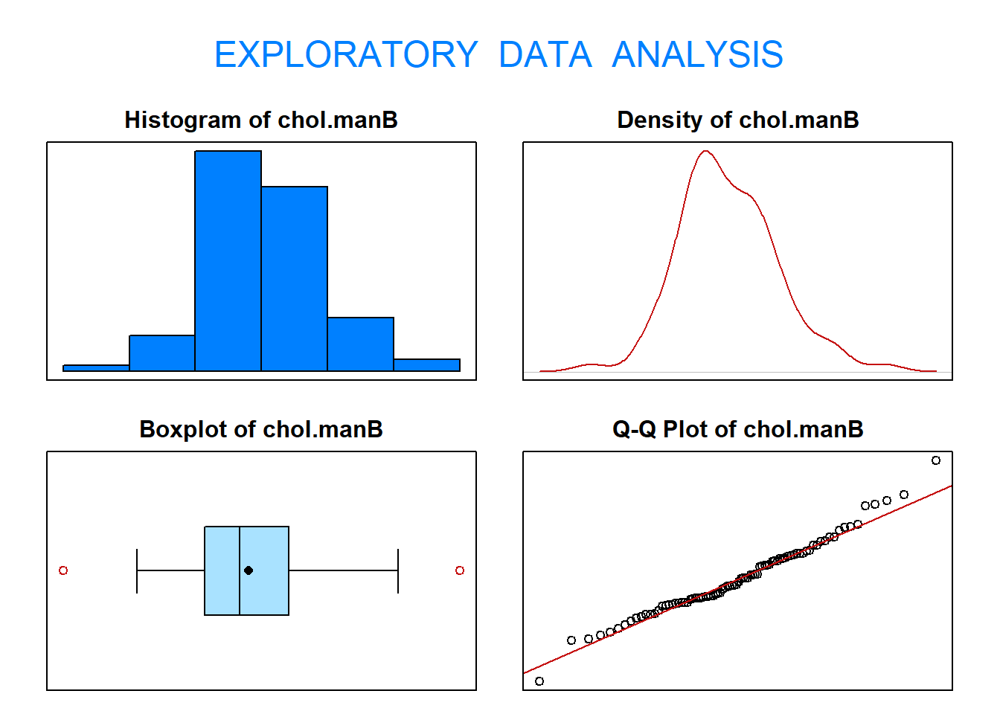
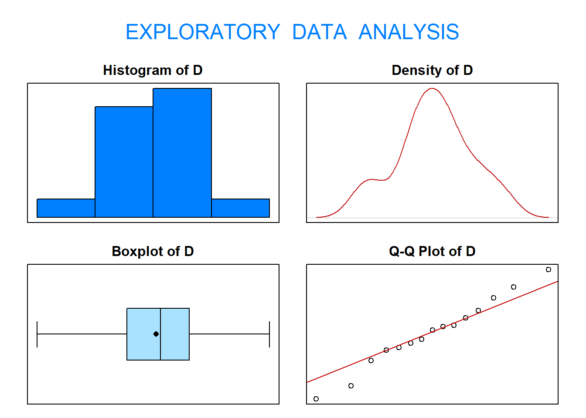
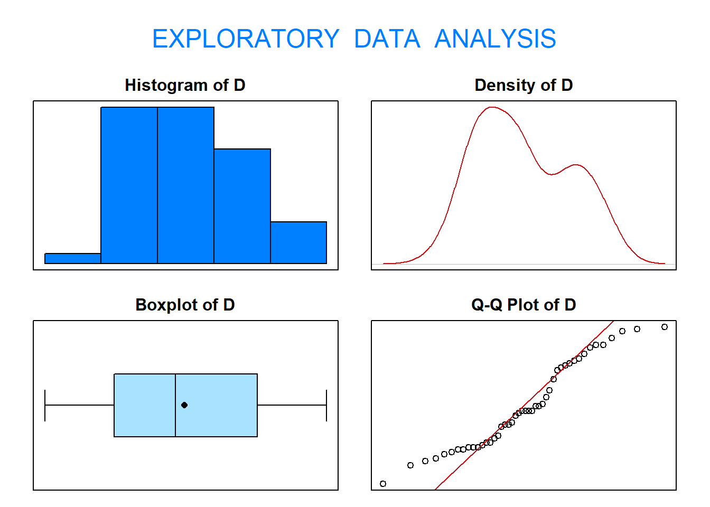
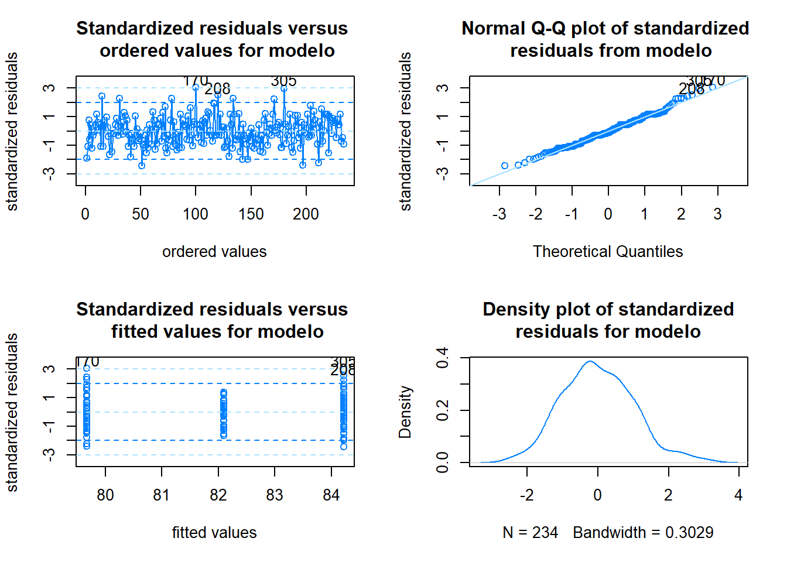
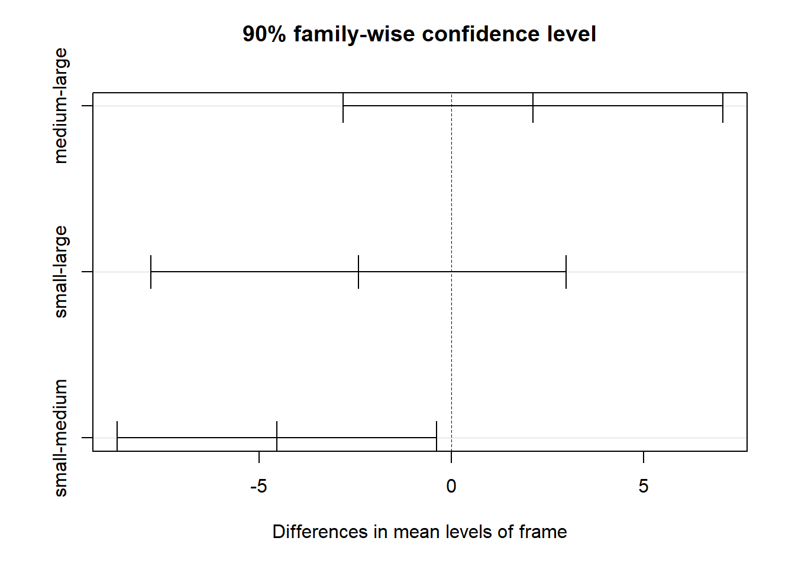

Práctica 3: Contrastes de hipótesis y análisis de la varianza
Author
Aritz Adin
Published
29/10/2025
Descripción
En esta práctica vamos a trabajar con el fichero de datos Diabetes.
El fichero de datos contiene 19 variables medidas sobre 403 pacientes. Estos pacientes forman parte de un estudio con 1046 sujetos diseñado para investigar la prevalencia de la de obesidad, diabetes, y otros factores de riesgo cardiovasculares para Afroamericanos en Virginia, EEUU.
Según Dr John Hong, Diabetes Mellitus Tipo II está asociada con la obesidad. El índice cintura-cadera puede ser un predictor en diabetes y enfermedades de corazón.
Diabetes Mellitus Tipo II está también asociada con hipertensión y ambos pueden ser parte del “Síndrome X”.
Los 403 sujetos del estudio son aquellos a los que se les hizo un seguimiento de diabetes. La hemoglobina glicosilada \(>7.0\) se toma normalmente como diagnóstico positivo de diabetes.
Contraste unilateral superior –> alternative="greater"
1. Contrastes paramétricos
1.1. Contrasta al nivel de significación 0.05 si el nivel medio de colesterol en los hombres del condado de Buckingham es superior a 200. Justifica si puedes asumir normalidad
Sea X=“Nivel de colesterol de los hombres del condado de Buckingham (mg/dL)”.
El contraste que debemos realizar (\(\alpha=0.05\)) se escribe como:
Comprobamos la condición de normalidad (test de Shapiro-Wilks):
library(PASWR2)eda(chol.manB)

Size (n) Missing Minimum 1st Qu Mean Median TrMean 3rd Qu
86.000 0.000 78.000 174.000 203.603 197.500 202.536 230.750
Max Stdev Var SE Mean I.Q.R. Range Kurtosis Skewness
347.000 44.598 1988.956 4.809 56.750 269.000 0.677 0.402
SW p-val
0.208
Realizamos el test (paramétrico) para una media:
t.test(chol.manB, mu=200, alternative="greater")
One Sample t-test
data: chol.manB
t = 0.74918, df = 85, p-value = 0.2279
alternative hypothesis: true mean is greater than 200
95 percent confidence interval:
195.6054 Inf
sample estimates:
mean of x
203.6029
Como p-valor\(=0.23>\alpha=0.05 \Rightarrow\) No rechazamos \(H_0\).
Interpretación: Con un nivel de significación del 5%, no existen evidencias estadísticas para afirmar que el nivel medio de colesterol en los hombres de Buckingham es superior a 200 mg/dL.
1.2. Contrasta al nivel de significación 0.10 si la presión diastólica media de los hombres es distinta a la presión diastólica media de las mujeres. Comprueba que las dos muestras provienen de poblaciones normales. Realiza el correspondiente test de medias.
Definimos las variables:
X=“Presión diastólica de los hombres (mmHg)”
Y=“Presión diastólica de las mujeres (mmHg)”
El contraste que debemos realizar (\(\alpha=0.10\)) se escribe como:
Two Sample t-test
data: bp1d.male and bp1d.female
t = 1.4469, df = 401, p-value = 0.1487
alternative hypothesis: true difference in means is not equal to 0
95 percent confidence interval:
-0.7066209 4.6461575
sample estimates:
mean of x mean of y
84.46534 82.49558
Como p-valor\(=0.15>\alpha=0.10 \Rightarrow\) No rechazamos \(H_0\).
Interpretación: Con un nivel de significación del 10%, no existen evidencias estadísticas para afirmar que la presión diastólica media de los hombres sea distinta del de las mujeres.
1.3. Se dispone de dos aparatos, uno nuevo y otro antiguo, para medir los niveles de glucosa en sangre. Los médicos sospechan que el nuevo aparato proporciona niveles de glucosa en sangre superiores al antiguo. Se dispone de una muestra con 15 pacientes diabéticos a los que se les ha medido los niveles de glucosa con los dos aparatos. Las medidas se encuentran en el fichero GLUCOSE de la librería PASWR2.
Como se tratan de los mismos individuos medidos en distintos instantes de tiempo, las muestras son dependientes (o emparejadas). Por lo tanto, trabajaremos con la diferencia entre ambas variables:
D <- GLUCOSE$old - GLUCOSE$new
Comprueba si puede asumirse la hipótesis de normalidad.
eda(D)

Size (n) Missing Minimum 1st Qu Mean Median TrMean 3rd Qu
15.000 0.000 -20.780 -16.085 -14.560 -14.330 -14.560 -12.830
Max Stdev Var SE Mean I.Q.R. Range Kurtosis Skewness
-8.620 3.253 10.582 0.840 3.255 12.160 -0.677 -0.105
SW p-val
0.994
Contrasta al nivel de significación\(\alpha=0.05\)si el nuevo aparato proporciona medidas más altas que el antiguo.
El contraste que debemos realizar se escribe como:
Como se verifica la hipótesis de normalidad, realizamo el test (paramétrico) para una media:
t.test(D, mu=0, alternative="less")
One Sample t-test
data: D
t = -17.335, df = 14, p-value = 3.701e-11
alternative hypothesis: true mean is less than 0
95 percent confidence interval:
-Inf -13.08064
sample estimates:
mean of x
-14.56
# Otra opción:t.test(GLUCOSE$old, GLUCOSE$new, paired=TRUE, mu=0, alternative="less")
Paired t-test
data: GLUCOSE$old and GLUCOSE$new
t = -17.335, df = 14, p-value = 3.701e-11
alternative hypothesis: true mean difference is less than 0
95 percent confidence interval:
-Inf -13.08064
sample estimates:
mean difference
-14.56
Como p-valor\(\approx 0<\alpha=0.05 \Rightarrow\) Rechazamos \(H_0\).
Interpretación: Con un nivel de significación del 5%, existen evidencias estadísticas para afirmar que el aparato nuevo proporciona niveles de medios de glucosa en sangre superiores al aparato viejo.
1.4. Contrasta al nivel de significación 0.05 si la proporción de hombres con hemoglobina glicosilada (glyhb) por encima del 6% es superior a 0.2.
Definimos la variable:
X=“Nº de hombres con valores de hemoglobina glicosilada superior al 6%” \(\sim Bin(n,\pi)\)
Calcula el número de hombres en la muestra con glyhb por encima del 6% y el total de hombres en la muestra.
Como se verifica que \(n*\pi_0=169*0.2 = 33.8 > 10\) y \(n*(1-\pi_0)=169*0.8 = 135.2 > 10\), podemos realizar el test aproximado como:
prop.test(x, n, p=0.2, alternative="greater")
1-sample proportions test with continuity correction
data: x out of n, null probability 0.2
X-squared = 0.81694, df = 1, p-value = 0.183
alternative hypothesis: true p is greater than 0.2
95 percent confidence interval:
0.1792768 1.0000000
sample estimates:
p
0.2307692
Como p-valor\(=0.183 > \alpha=0.05 \Rightarrow\) No rechazamos \(H_0\).
Interpretación: Con un nivel de significación del 5%, no podemos afirmar que la proporción de hombres con valores de hemoglobina glicosilada superior al 6% sea superior a 0.2.
1.5. Contrasta al nivel de significación 0.05 si la proporción de hombres con colesterol por debajo de 200mg/dL es superior a la proporción de mujeres con colesterol por debajo de 200mg/dL.
Definimos la variable:
X=“Nº de hombres con colesterol por debajo de 200mg/dL” \(\sim Bin(n_X,\pi_X)\)
Y=“Nº de mujeres con colesterol por debajo de 200mg/dL” \(\sim Bin(n_Y,\pi_Y)\)
Calcula el número de hombres en la muestra con colesterol por debajo de 200mg/dL y el total de hombres de la muestra (\(n_X\)).
x <-sum(diabetes$gender=="male"& diabetes$chol<200)x
[1] 79
nx <-sum(diabetes$gender=="male")nx
[1] 169
Calcula el número de mujeres en la muestra con colesterol por debajo de 200mg/dL y el total de mujeres de la muestra (\(n_Y\)).
y <-sum(diabetes$gender=="female"& diabetes$chol<200)y
[1] 105
ny <-sum(diabetes$gender=="female")ny
[1] 234
Realiza un test para la diferencia de proporciones.
El contraste que debemos realizar se escribe como:
2-sample test for equality of proportions with continuity correction
data: c(x, y) out of c(nx, ny)
X-squared = 0.073608, df = 1, p-value = 0.3931
alternative hypothesis: greater
95 percent confidence interval:
-0.06909495 1.00000000
sample estimates:
prop 1 prop 2
0.4674556 0.4487179
Como p-valor\(=0.3931 > \alpha=0.05 \Rightarrow\) No rechazamos \(H_0\).
Interpretación: Con un nivel de significación del 5%, no podemos afirmar que la proporción de hombres con colesterol por debajo de 200mg/dL sea superior a la proporción de mujeres con colesterol por debajo de 200mg/dL.
2. Contrastes no-paramétricos
2.1. ¿Puede asumirse que la variable ‘hdl’ en mujeres sigue una distribución normal? Contrasta al nivel de significación 0.05 si la media de la variable ‘hdl’ en mujeres es superior a 47.
Sea X=“Nivel de HDL de las mujeres (mg/dL)”.
El contraste que debemos realizar (\(\alpha=0.05\)) se escribe como:
Wilcoxon signed rank test with continuity correction
data: hdl.female
V = 16282, p-value = 0.001492
alternative hypothesis: true location is greater than 47
Como p-valor\(=0.0015 < \alpha=0.05 \Rightarrow\) Rechazamos \(H_0\).
Interpretación: Con un nivel de significación del 5%, existen evidencias estadísticas para afirmar que el nivel medio de HDL en mujeres es superior a 47 mg/dL.
2.2. ¿Contrasta al nivel de significación 0.05 si existen diferencias entre los niveles de hdl en hombres y en mujeres. Comprueba si puede asumirse normalidad y realiza el contraste adecuado.
Definimos las variables:
X=“Nivel de HDL en hombres (mg/dL)”
Y=“Nivel de HDL en mujeres (mg/dL)”
El contraste que debemos realizar (\(\alpha=0.10\)) se escribe como: \[\begin{eqnarray*}
\begin{array}{rl}
H_0: & \mu_X - \mu_Y = 0 \\
H_1: & \mu_X - \mu_Y \neq 0 \\
\end{array}
\end{eqnarray*}\]
En primer lugar seleccionamos los datos de las muestras:
Wilcoxon rank sum test with continuity correction
data: hdl.male and hdl.female
W = 16630, p-value = 0.006439
alternative hypothesis: true location shift is not equal to 0
Como p-valor\(=0.006<\alpha=0.05 \Rightarrow\) Rechazamos \(H_0\).
Interpretación: Con un nivel de significación del 5%, existen evidencias estadísticas para afirmar que el nivel medio de HDL en hombres y mujeres es distinto.
2.3. Considera el fichero PHENYL de la libreria PASWR2. Contrasta al nivel de significación 0.05 si existen diferencias en los niveles medios de la coenzima Q10 en el momento de comenzar el estudio (variable Q10.1) y al finalizar el estudio (variable Q10.4).
Como se tratan de los mismos individuos medidos en distintos instantes de tiempo, las muestras son dependientes (o emparejadas). Por lo tanto, trabajaremos con la diferencia entre ambas variables:
D <- PHENYL$Q10.1-PHENYL$Q10.4# Comprobamos la condición de normalidadeda(D)

Size (n) Missing Minimum 1st Qu Mean Median TrMean 3rd Qu
46.000 0.000 -0.220 -0.048 0.122 0.100 0.120 0.298
Max Stdev Var SE Mean I.Q.R. Range Kurtosis Skewness
0.470 0.190 0.036 0.028 0.346 0.690 -1.172 0.305
SW p-val
0.022
El contraste que debemos realizar se escribe como:
Como no se verifica la hipótesis de normalidad, realizamo el test no-paramétrico para la diferencia de medias.
wilcox.test(D, mu=0, alternative="two.sided")
Warning in wilcox.test.default(D, mu = 0, alternative = "two.sided"): cannot
compute exact p-value with ties
Wilcoxon signed rank test with continuity correction
data: D
V = 857.5, p-value = 0.0005439
alternative hypothesis: true location is not equal to 0
# Otra opciónwilcox.test(PHENYL$Q10.1, PHENYL$Q10.4, paired=TRUE, mu=0, alternative="two.sided")
Warning in wilcox.test.default(PHENYL$Q10.1, PHENYL$Q10.4, paired = TRUE, :
cannot compute exact p-value with ties
Wilcoxon signed rank test with continuity correction
data: PHENYL$Q10.1 and PHENYL$Q10.4
V = 857.5, p-value = 0.0005439
alternative hypothesis: true location shift is not equal to 0
Como p-valor\(=0.0005 < \alpha=0.05 \Rightarrow\) Rechazamos \(H_0\).
Interpretación: Con un nivel de significación del 5%, tenemos evidencias estadísticas para afirmar que los niveles medios de la coenzima Q10 han cambiado a lo largo del estudio.
3. Análisis de la varianza y test de Kruskal-Wallis
3.1. Contrasta al nivel de significación 0.10 si el tamaño del cuerpo (frame) influye en la presión diastólica (bp.1d) de las mujeres.
a) Crea un nuevo fichero llamado diabetes.female solo con las mujeres.
Df Sum Sq Mean Sq F value Pr(>F)
frame 2 921 460.7 2.572 0.0786 .
Residuals 231 41376 179.1
---
Signif. codes: 0 '***' 0.001 '**' 0.01 '*' 0.05 '.' 0.1 ' ' 1
d) Comprueba si pueden asumirse las hipótesis del modelo.
library(PASWR2)checking.plots(modelo)

## Test de normalidad para los erroresr <-rstandard(modelo)shapiro.test(r)
Shapiro-Wilk normality test
data: r
W = 0.98986, p-value = 0.1008
## Test de Levene para homogeneidad de varianzaslibrary(car)
Cargando paquete requerido: carData
leveneTest(bp.1d ~ frame, data=diabetes.female)
Levene's Test for Homogeneity of Variance (center = median)
Df F value Pr(>F)
group 2 1.8214 0.1641
231
e) Utiliza un test de Tukey para averiguar entre qué niveles de la variable frame existen diferencias significativas en los niveles medios de la variable bp.1d
Tukey multiple comparisons of means
90% family-wise confidence level
Fit: aov(formula = bp.1d ~ frame, data = diabetes.female)
$frame
diff lwr upr p adj
medium-large 2.121373 -2.811945 7.0546917 0.6491061
small-large -2.423910 -7.826310 2.9784887 0.6247892
small-medium -4.545284 -8.697193 -0.3933743 0.0639277
## Graficos de intervalos de confianza del test de Tukeyplot(modelo.comp)

3.2. Utiliza el fichero diabetes.female para responder a las siguientes cuestiones.
a) Contrasta al nivel de significación\(\alpha=0.05\)si existen diferencias entre los niveles medios de glucosa glicosilada (glyhb) según la constitución del tamaño del cuerpo (frame) entre las mujeres.
Study: diabetes.female$glyhb ~ diabetes.female$frame
Kruskal-Wallis test's
Ties or no Ties
Critical Value: 20.11077
Degrees of freedom: 2
Pvalue Chisq : 4.295381e-05
diabetes.female$frame, means of the ranks
diabetes.female.glyhb r
large 157.07143 42
medium 114.76423 123
small 98.28986 69
Post Hoc Analysis
Comparison between treatments mean of the ranks.
Difference pvalue Signif. LCL UCL
large - medium 42.30720 0.0003 *** 19.424803 65.18960
large - small 58.78157 0.0000 *** 33.723420 83.83973
medium - small 16.47437 0.0932 . -2.783587 35.73233
4. Para entregar
Responde a las siguientes cuestiones, utilizando la misma muestra de pacientes que te ha sido asignada en la Práctica 2 para el fichero patients.txt.
4.1. Contrasta al nivel de significación 0.1 si los niveles medios de la concentración de Interleukina-6 (IL6) son significativamente distintos en pacientes con cáncer en estadio I que en paciente con cáncer en estadio II.
Define correctamente las variables del problema.
Comprueba si las dos muestras provienen de poblaciones normales.
Realiza el correspondiente test de hipótesis.
4.2. Se estudió la eficacia de la sulfinpirazona en prevenir la muerte después de sufrir infarto de miocardio. Para ello se consideraron pacientes que habían sufrido infarto de miocardio. A un grupo se les proporcionó sulfinpirazona y a otro grupo se les suministró placebo. En la siguiente tabla se muestra el número de pacientes de cada grupo que murieron y que superaron el infarto.
Death (all causes)
Survivors
Sulphinpyrazole
41
692
Placebo
60
682
Contrasta al nivel de significación\(\alpha=0.01\) si la proporción de muertes de pacientes que tomaron sulfinpirazona es inferior a la de pacientes que tomaron un placebo.
4.3. Contrasta al nivel de significación \(\alpha=0.1\) si existen diferencias en la edad media de los pacientes según el estadio de cancer (CancerStage).
Realiza una exploración gráfica y el análisis de varianza correspondiente
Comprueba si pueden asumirse las hipótesis del modelo
Si has detectado diferencias, averigua entre qué grupos existen diferencias estadísticamente significativas